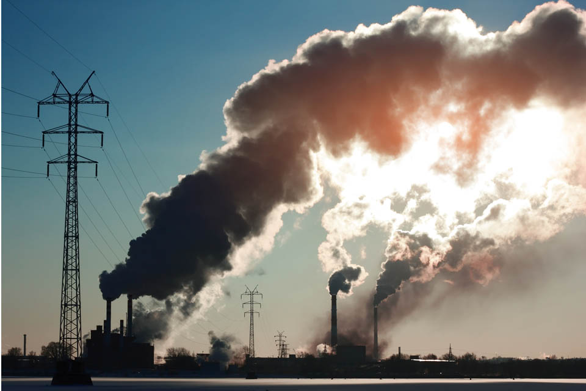
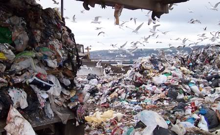

5/5/21
התחממות כדה״א
מה ההשלכות ואיך ניתן למנוע
מבואלאחרונה יצא לי לקרוא הרבה על התחממות הגלובלית, ועלתה לי השאלה מה ההשלכות ומה ניתן לעשות כדי למנוע את התופעה. לאחר בדיקה מעמיקה באינטרנט, גיליתי שלהתחממות הגלובלית יש השלכות רבות כגון עליית מפלס הים, היכחדות בעלי חיים, שריפות והוריקנים בתדירות גבוהה ועוד השלכות מרתיעות רבות. למרות ההשלכות הרעות, יש דרכים רבות להאט ולעצור את ההתחממות הגלובלית. ניתן להשתמש פחות ברכב פרטי, לחסוך בחשמל, לנטוע עוד עצים ועוד הרבה דרכים בהן ניתן לעצור את התופעה הנוראית הזו.
סקירת ספרותבזמן האחרון אלפי כתבות נכתבות על התחממות כדור הארץ, על כמה מסוכן זה, ומה המושג התחממות גלובלית בעצם אומר. כתבות רבות נסגרות במסר שאין דרך לשינוי, ואם יש דרך זה רק בידי חברות הענק. ואנחנו, האזרחים הקטנים פשוט לא יכולים להשפיע. תחילה נסביר מהו המושג התחממות כדור הארץ, התחממות כדור הארץ הוא מושג לתיאור תהליך של שינוי חד באקלים העולמי, כלומר עלייה בטמפרטורה הממוצעת של כדור הארץ. בשנים האחרונות, בעקבות פעילות תעשייתית, העלייה בטמפ׳ הגיע לשיאים חדשים, ולכן כל יום צצות עוד ועוד כתבות על הנושא. אתן דוגמא להבנת הנושא, משנת 1900 עד 2000, משך זמן של 100 שנים, הטמפ׳ הממוצעת בכדור הארץ עלתה במעלה אחת בלבד. בהשוואה לכך, אם נמשיך עם קצב העלייה שיש כיום עד שנת 2100, הטמפ׳ הממוצעת בין 2000 עד 2100 תגדל ב-6 מעלות, פי 6 מלפני! רוב האנשים לא מבינים את גודל הסכנה בעלייה כזו גדולה בטמפ׳ הממוצעת, אז כעת אסביר מהן ההשלכות ולמה הן כל כך מסוכנות להמשך סדר היום השגרתי של כל אחד ואחת מאיתנו. נתחיל מהמסת הקרחונים באנטרטיקה, בגלל העלייה בטמפ׳ כדור הארץ, כמות אדירה של קרחונים נמסים מדי שנה, כמה? למעלה מ-100 מיליארד טון של קרח! כלומר מדי שנה מפלס הים עולה בכ-3 מילימטר. הנתון הזה נשמע לא משמעותי ולא מזיק, אך בפועל כל שנה שטח הקרקע יורד, ואם זה ימשיך, בתוך כמה שנים ערים שלמות יהיו מוצפות. כבר היום ישנם ערים רבות בהן שפת הים הגיע עד לפתחי הבתים והדיירים נאלצו לעבור לאזור יותר גבוה. וזה מעביר אותנו לסכנה הבאה - חוסר בקרקע. כפי שראינו בהשלכה בפסקה הקודמת, כל שנה יהיה פחות קרקע כתוצאה מעליית מפלס המים, הדבר יגרום לחיות רבות לאבד שטחי מחייה, ולעבור לאזורים אחרים או פשוט להיכחד, כדוגמת דובי קוטב. חיות רבות יכולות לעבור לאזורי מגורים, דבר זה יכול לגרום סכנה לבני האדם הגרים באזור. בנוסף, חיות נכחדות הורסות את סדר פירמידת המזון הקיימת בטבע. כלומר אם דובי הקוטב מהדוגמא הקודמת יכחדו, החיות שהן אוכלות יתרבו ולכן החיות שהם אוכלים יכחדו מאכילת יתר, וכך הלאה. דבר זה יגרום שרשרת של אסונות בשרשרת המזון ובטבע ככלל, עד למצב שבעלי חיים יהיו רק באזורים מלאכותיים בעזרת בני אדם. כתוצאה מהעלייה בטמפ׳ הממוצעת, תהיה עלייה במחלות ונגיפים חדשים, שיהיו יותר מדבקים ויותר מסוכנים לאדם. טמפ׳ האוויר והים יעלו גם הן בעקבות ההתחממות הגלובלית, וככל שהאוויר יהיה יותר חם, כך שיווצרו יותר שריפות ביערות. שריפות יכולות להרוס אלפי דונמים של שטחי יער, זה יכול לסכן ואף להרוג את החיות שנמצאות באזורים אלה. בגלל שטמפ׳ הים תעלה, הסיכוי להוריקונים יגדל, ההוריקנים יכולים להרוס אלפי דונמים, משפחות ובתים. בנוסף להוריקנים ושריפות, ההתחממות הגלובלית גורמת לכמות משקעים יותר גבוהה. זה נשמע לא נוראי, ואולי אפילו טוב, אך כמות משקעים גבוהה יכולה לגרום להרבה בעיות. גשמים מרובים יכולה לגרום לאזורי חקלאות לשקוע במים. הדבר יהרוס את היבול וכן את האדמה כך שלא יוכלו לגדל עליה יותר. בנוסף לכך, יתושים, ארבה ומזיקים רבים אוכלים הרבה יותר יבול. כתוצאה מהטמפרטורות הגבוהות, המזיקים שורפים יותר אנרגיה וכך גם אוכלים הרבה יותר יבול, דבר הגורם למחסור המזון לאף יותר גדול ממה שהוא היה. במיוחד במדינות עולם שלישי, בהן אין אפשרות לטפל במזיקים בטכנולוגיות חדישות או יקרות.  בנוסף לכל השלכות אלו, ישנם עוד עשרות השלכות להתחממות הגלובלית שיכולות לסכן את כולנו, וכעת עולה השאלה, מה ניתן לעשות כדי למנוע את התחממות הגלובלית? נתחיל בהבנה מה גורם לעלייה בטמפ׳ - הפחמן הדו חמצני. פחמן דו חמצני מיוצר משריפת דלק, פחם או גזים אחרים, פחמן הדו חמצן בעצם לוכד את החום המתקבל מהשמש בתוך האטמוספרה, ומשאיר אותו באטמוספרה, כך שהחום נשאר וגדל, כמו בחממה. כיום כמות הפחמן הדו חמצני שבני אדם גבוהה בהרבה ממה שפלטו בעבר, והמגמה מראה עתיד לא ורוד כל כך. בעקבות הגידול בבני אדם, והגידול בתעשיות גדולות ומזהמות, כמות הפחמן הדו חמצני באטמוספרה עולה בקצב מדאיג. הדרך הראשונה להקטנת הפחמן הדו חמצני באטמוספרה, היא עצים, והרבה מהם. זה אמנם נשמע מוזר, איך עצים יכולים להשפיע על הטמפ׳ של כדור הארץ? עצים הם בעצם ה״ריאות״ של הטבע, הם לוקחים פחמן דו-חמצני והופכים אותו לחמצן, כך שיהיה פחות פחמן דו-חמצני באטמוספרה. למעשה אם היערות יחזרו למצבן המקורי, לפני יד האדם, כשני שליש מפחמן דו חמצן המלאכותיי באטמוספרה יעלם. דרך נוספת להוריד מרמת הפחמן הדו חמצני באטמוספרה, היא הפחתת השימוש ברכבים פרטיים, רכבים פולטים כמויות עצומות של פחמן דו חמצני, והכמות רק הולכת וגדלה מדי שנה. אם יותר נהגים יחליפו את הרכב הפרטי לתחבורה ציבורית, המצב יהיה הרבה יותר טוב. למעשה, 29% מכלל הפחמן הדו חמצני הנפלט לאטמוספרה מגיע מרכבים, אם נצליח להפחית את הנתון הזה, המצב ישתפר משמעותית. בנוסף לתחבורה ציבורית, הרבה נהגים עוברים מרכב מנועי לרכב חשמלי, כך שלא נפלט פחמן דו חמצני מהרכב, אך גם לפתרון זה יש בעיה, והיא הבעיה הבאה שלנו. חשמל נמצא במקום השני לאחר רכבים בפליטת פחמן דו חמצני, עם 28% מכלל הפחמן הדו חמצני הנפלט לאטמוספרה. כאשר מייצרים חשמל, שורפים כמויות עצומות של גז, וכמו שאמרנו בהתחלה, שריפת גז משחררת פחמן דו חמצני. כיום יותר ויותר מדינות עוברות לייצור חשמל ירוק, עם לוחות סולאריים, טורבינות רוח ועוד. אך זה לא מספיק, כיום רק כ-11% מהחשמל המיוצר הוא ירוק, שזה לא קרוב לכמות האנרגיה הרצויה ויש עוד דרך ארוכה לחשמל שכולו ירוק. מה אנחנו יכולים לעשות? כיום יש חברות המציעות הרכבת לוחות סולאריים לגגות של בתים פרטיים, כך לא צריך לשלם על החשמל, ואפילו ניתן למכור חשמל לחברת החשמל. ואם לוחות סולאריים נשמע יקר ומסורבל, אפשר לשים לב יותר לכמות החשמל שאנחנו מבזבזים, לכבות אורות כשלא בחדר, לא להשתמש במזגן שלא צריך, לנתק מוצרים כאשר לא משתמשים ועוד. דרך אחרונה שאפרט עליה, זה מוצרים רב פעמיים, ולא פלסטיק חד פעמי. במבט ראשוני פלסטיק לא נראה קשור להתחממות כדור הארץ, אך בפועל תעשיות אלה שורפות כמויות עצומות של דלק וחומרים רעילים במטרה לייצר את הפלסטיק שאנו משתמשים בו ל-10 דקות וזורקים. זה אמנם לא קל, לנסות לא להשתמש בפלסטיק, אבל אפשרי. זה מהדברים הקטנים כמו לבקש במשלוחים לא להביא סכו״ם חד פעמי, או להעביר את השקיות הפלסטיק לשקיות רב פעמיות, עד לשכנע את מקום העבודה להביא את הקפה בכוס רב פעמית או מחומר שלא מזהם. מבין כל הפתרונות שהצעתי, זה הפתרון הכי ריאלי לדעתי, וגם אם תשכנעו עוד אנשים, זה יהיה הפתרון הכי יעיל. עוד ועוד אנשים שיתנגדו למוצרים חד פעמיים, כך שתעשיות הפלסטיק יפסיקו לייצר בכמויות ולזהם את הסביבה. זה לא משנה באיזה פתרון תבחרו, העיקר שתעשו שינוי בחיים שלכם, אפילו הכי קטן, בשביל כדור הארץ שלנו, בשביל עתיד טוב יותר.
סיכום דיוןלאחר שראינו את ההשלכות הגדולות שיש להתחממות כדור הארץ על החיים שלנו, ואת הסכנה הקיימת במצב הנתון. הבנו מה משמעות המושג התחממות גלובלית. ראינו מה הגורמים להתחממות ואיך ניתן להפחית את כמות הפחמן הדו חמצני באטמוספרה. למדנו מה כל אחד ואחד יכול לעשות כדי להגיע למטרה המשותפת של כולנו שהיא להפסיק את התחממות הגלובלית, או לכל הפחות להאט אותה. ניתן להגיד שלכל אחד יש אחריות במצב, בין אם אתה עובד משרד, תלמיד בית ספר, בעל עסק או מנהל מפעל ענק. כל אדם צריך לחשוב איך ההתחממות הגלובלית משפיעה עליו ועל העולם סביבו, כי גם אם ההשלכות לא מורגשות עכשיו, בקרוב לא יהיה ניתן להתעלם מהסיטואציה, וכמו כדור שלג, ההשלכות רק יגדלו ויגדלו . מאיים באמריקה שיוצפו וימחקו בקרוב, לדובי קוטב שלא יהיו, ועד אסונות טבע שיקרו בתדירות יותר גבוהה, על כל אדם ההתחממות הגלובלית משפיעה, הכל תלוי בזמן ובמקום שאתה נמצא. בישראל ההתחממות הגלובלית מורגשת בטמפ׳, באמריקה ישנם הוריקנים בתדירות גבוהה, ובקוטב הצפוני הדובי קוטב נמצאים בקשיים קיומיים.  כפי שנאמר לפני, לכל אדם יש אחריות בהתחממות הגלובלית, ולכן אני חושב שכל אדם גם יכול לעזור להפחתת ההתחממות הגלובלית. כל אדם ואדם צריך לחשוב לעצמו מה הוא יכול לעשות כדי לעזור, ולהילחם בתופעה הנוראית. בין אם זה למחזר נייר, להשתמש בתחבורה ציבורית, לנטוע עץ, ,להשתמש במוצרים רב פעמיים, או אפילו לכבות אורות בבית כשלא צריך. אם כולנו נעשה מאמצים כדי להילחם במצב הקיים, אני מאמין שנצליח להתגבר על ההתחממות הגלובלית ולהחזיר את כדור הארץ למצב שהוא היה בו לפני המהפכה התעשייתית, וכך לחיות בשלום עם כדור הארץ. המושג התחממות גלובלית הוא הרבה יותר גדול ממה שרובנו חושבים, וכבר מזמן אי אפשר להתעלם מההשפעות שלו. צריך שכל אדם ילמד וידע מה הוא יכול לעשות, וצריך שכל אדם יספר לאנשים מה הם יכולים לעשות, כי זה כדור הארץ של כולנו. אם כולנו לא נעשה שינוי דרסטי בחיינו, המצב יהיה גרוע יותר. תוך כמה עשרות שנים, לא נוכל לחיות פה, ונצטרך למצוא פתרונות יקרים ומסובכים יותר, וגם זה בתנאי שנמצא פתרונות כאלו לסיכום, ספרו לחברים, למשפחה ולכל אדם שרק תוכלו. ספרו את כל ההשלכות, את כל התופעות שיקרו בשנים הקרובות, ותסבירו שכרגע המצב לא משתפר, אלא להפך. אם כולנו נשים יד במהלך משותף להילחם בהתחממות הגלובלית, העתיד יהיה הרבה יותר ורוד.